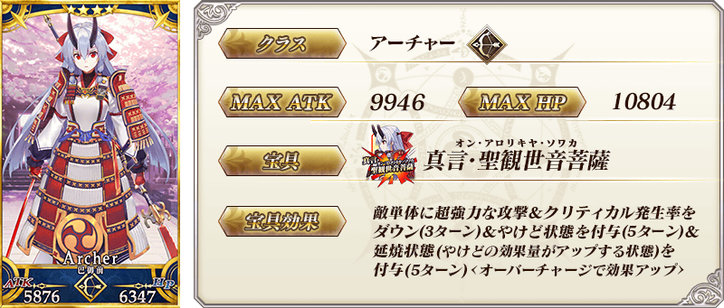
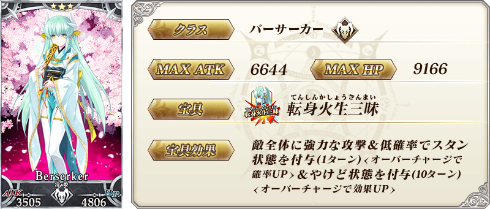
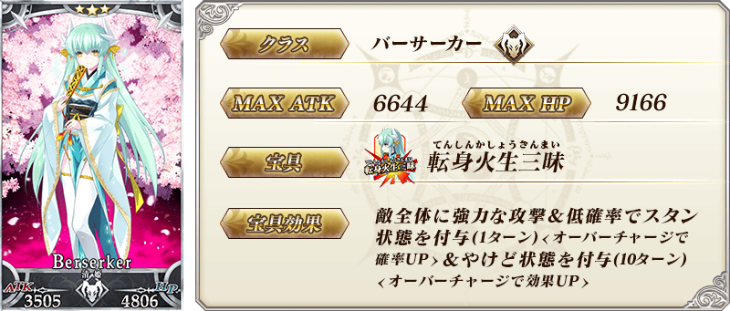
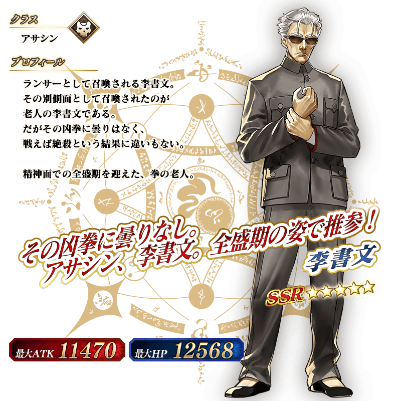

◆「復刻 雀之旅社活動日誌Pick Up2召喚」期間◆
期間:2020年1月11日(六) 17:00～1月25日(六) 11:59
期間限定「復刻 雀之旅社活動日誌Pick Up2召喚」舉辦！
變更在2019年舉辦的「雀之旅社活動日誌Pick Up2召喚(每日交替)」一部份內容進行復刻。
※未通過第2部 第3章「Lostbelt No.3 人智統合真國 SIN 紅之月下美人」的狀態也能進行「復刻 雀之旅社活動日誌Pick Up2召喚」。
從期間限定活動「復刻:雀之旅社活動日誌～閻魔亭繁盛記～ 輕量版」關聯從者之中，「★5(SSR)李書文(Assassin)」「★4(SR)巴御前(Archer・地獄)」「★3(R)清姬(Berserker)」Pick Up！
「★5(SSR)笑顔のしるし」「★4(SR)正月の神秘」「★3(R)慎ましき豚」做為期間限定概念禮裝登場！
裝備上述3種概念禮裝的話，在期間限定活動「復刻:雀之旅社活動日誌～閻魔亭繁盛記～ 輕量版」中會提升活動道具的掉落獲得數。
Pick Up期間中，Pick Up對象從者與概念禮裝的出現機率提升！
詳情請在聖晶石召喚畫面左下的召喚詳細確認。
11次召喚中確定1張★4(SR)以上和確定1位★3(R)以上的從者！ ※確定★4(SR)以上包含從者和概念禮裝。
◆有關從者的注意◆
※Pick Up期間中，「★5(SSR)李書文(Assassin)」就算通過各章前也能入手。
※「★5(SSR)李書文(Assassin)」「★4(SR)巴御前(Archer・地獄)」「★3(R)清姬(Berserker)」在Pick Up期間結束後仍會在故事召喚被抽出。
※關於隱藏真名尚未判明的從者，透過主線關卡的進行會讓從者及一部份份寶具的名稱變化。
◆有關從者真名的注意◆
在2018年12月31日(二) 23:00以後新配信的主線故事及期間限定活動、一部份關卡、宣傳活動及召喚中，會顯示隱藏真名的對象從者真名。
※2018年12月31日(一) 22:59前已經配信的主線故事、復刻活動、一部份關卡中不在此限。
◆有關概念禮裝的注意◆
※請注意成為抽出對象期間限定概念禮裝只有「★5(SSR)笑顔のしるし」「★4(SR)正月の神秘」「★3(R)慎ましき豚」，其他的期間限定概念禮裝是被抽出對象外。
※「★3(R)慎ましき豚」在Pick Up期間中，也能靠友情點數召喚獲得。
※請注意自友情點數召喚抽出的「★3(R)慎ましき豚」在自動變還設定登錄★3(R)概念禮裝的情況，會變成自動變還的對象。

 ※上述「★5(SSR)李書文(Assassin)」的卡面為靈基再臨第2階段。
※上述「★5(SSR)李書文(Assassin)」的卡面為靈基再臨第2階段。
 ※上述「★4(SR)巴御前(Archer・地獄)」的卡面為靈基再臨第2階段。
 
※上述「★3(R)清姬(Berserker)」的卡面為靈基再臨第2階段。

※上述「★3(R)清姬(Berserker)」的卡面為靈基再臨第2階段。


|
★★★★★SSR
|


|
★★★★SR
|


|
★★★R
|

 ※上述「★5(SSR)李書文(Assassin)」的立繪為靈基再臨第2階段。

介紹「★5(SSR)李書文(Assassin)」「★4(SR)巴御前(Archer・地獄)」的寶具演出！
在「Fate/Grand Order」官方網站內的公告中，以影片公開寶具演出，敬請確認。
其他還有，期間限定活動「復刻:雀之旅社活動日誌～閻魔亭繁盛記～ 輕量版」和期間限定「復刻 雀之旅社活動日誌Pick Up召喚(每日交替)」同時舉辦！
關於詳情，請自下述橫幅確認。
■「復刻:雀之旅社活動日誌～閻魔亭繁盛記～ 輕量版」詳細情報

■「復刻 雀之旅社活動日誌Pick Up召喚(每日交替)」詳細情報